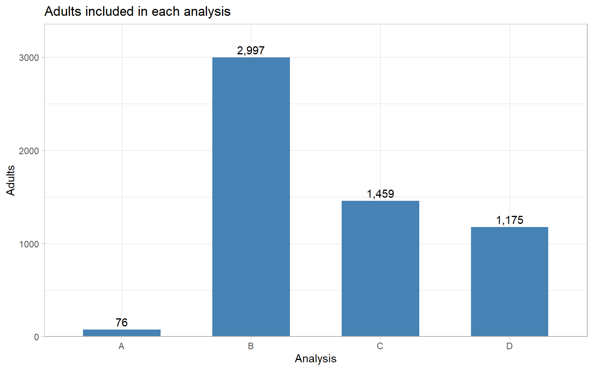
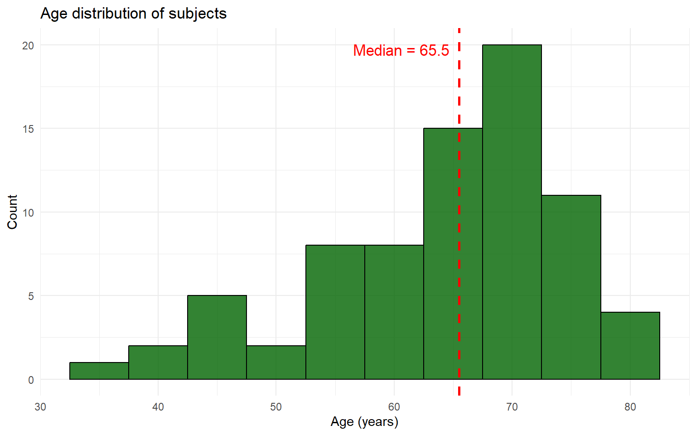
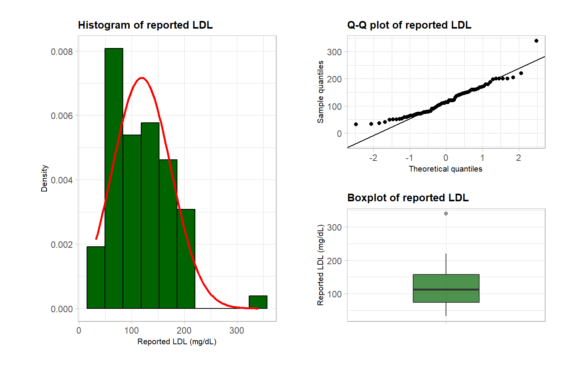
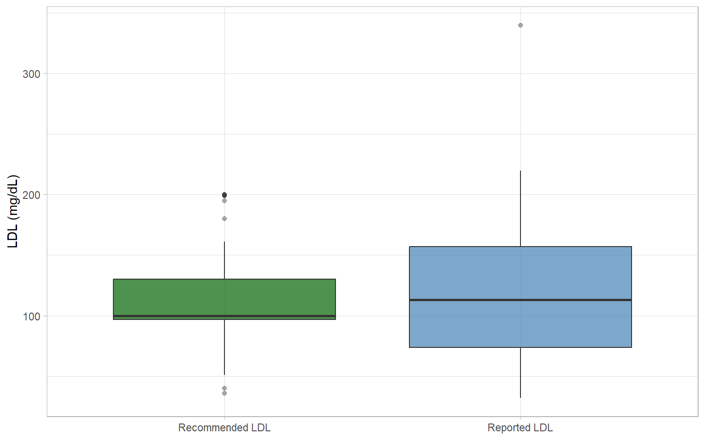
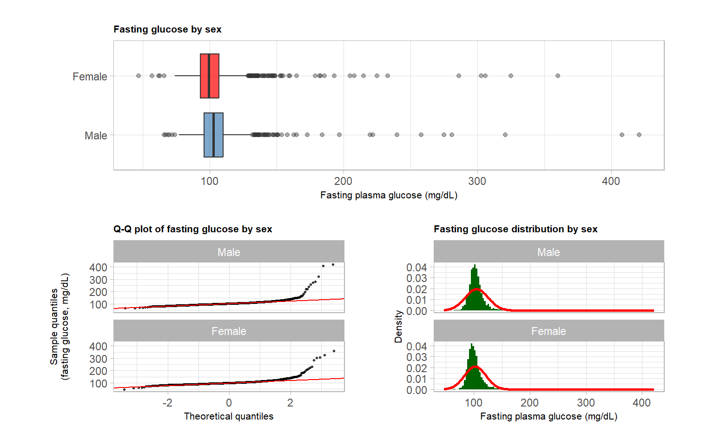
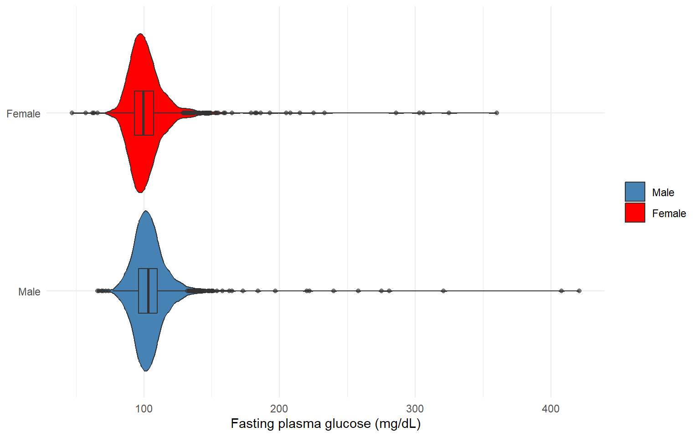
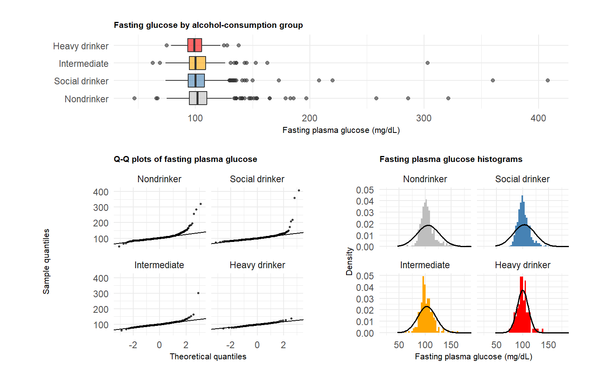
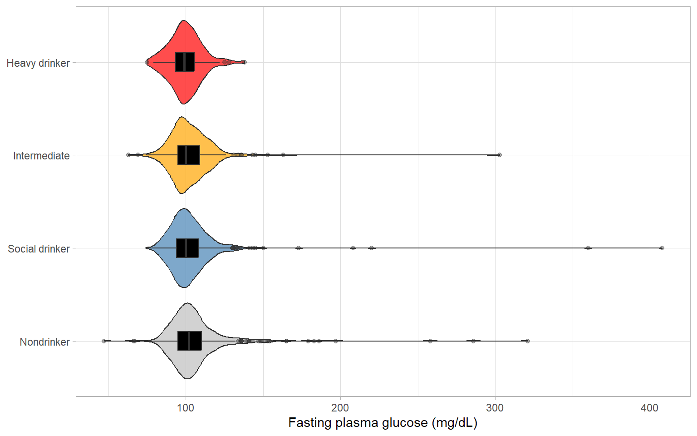
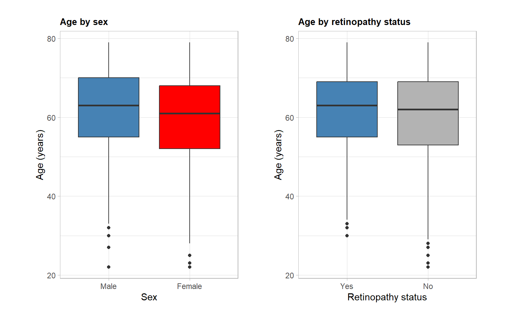
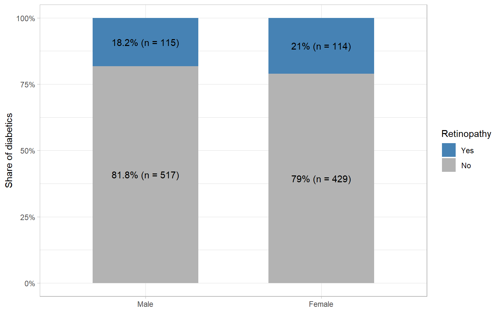

Adults analyzed (age 21-79)
7,853
A: median LDL difference (mg/dL)
2.5
B: glucose difference, male - female (mg/dL)
2.7
C: ANOVA p-value
0.017
D: relative risk, male / female
0.87
| Analysis | Research question | Method | n | Key result | Conclusion |
|---|---|---|---|---|---|
| A | Among diabetics on pills, does reported LDL differ from the doctor's recommended LDL? | Paired samples: bootstrap of the median difference | 76 | Median difference (reported - recommended) = 2.5 (90% CI 0.0 to 10.0) mg/dL | No difference between reported and recommended LDL |
| B | Do non-diabetic men have higher fasting glucose than women? | Two independent samples: Welch t-test | 2,997 | Mean difference (Male - Female) = 2.71 (90% CI 1.52 to 3.90) mg/dL | Men have significantly higher fasting glucose |
| C | Does alcohol-use frequency affect fasting glucose in non-diabetic adults? | Four independent samples: one-way ANOVA + Tukey HSD | 1,459 | ANOVA F(3, 1455) = 3.41, p = 0.017; 2 of 6 Tukey pairs significant | Groups differ; significant pairs: Social drinker-Nondrinker; Heavy drinker-Nondrinker |
| D | Is retinopathy (severe diabetes) more common in diabetic men than women? | 2 x 2 table: relative risk, odds ratio, risk difference | 1,175 | Relative risk (Male / Female) = 0.87 (90% CI 0.71 to 1.05) | No significant sex difference in retinopathy |
| All intervals are 90% CIs. | |||||
Questions. Using NHANES data on U.S. adults aged 21-79, this dashboard walks through four analyses:
How to use it. Start with the headline numbers and the results table. Each Analysis page follows the same path: Research question, About the data, Analysis, and Conclusion. The Codebook page documents every variable and the sample flow.
Data. NHANES 2017-March 2020 pre-pandemic files (P_DEMO, P_DIQ, P_GLU, P_ALQ). Dashboard last rendered 2026-09-30 13:16 EDT.

Diabetic pills control blood sugar and may also influence other clinical measures such as LDL, which tends to be elevated in diabetes. The question is whether reported LDL differs from the doctor’s recommended LDL in this group.
Design: paired samples (each person has one reported and one recommended value).
Cohort. Diabetic adults who currently take diabetic pills (DIQ070 = 1) and gave both a reported and a recommended LDL value (refused, don’t know and missing answers removed): 76 adults.
Age. LDL levels tend to rise with age, so the age mix matters when interpreting results. The age distribution is slightly left-skewed with a median of 65.5 years.
Normality. Reported LDL is right-skewed: the histogram and boxplot show extreme high values that curve the right tail of the Q-Q plot. Normality cannot be assumed (see the Normality of reported LDL tab).

| min | Q1 | median | Q3 | IQR | max | mean | sd | n | missing |
|---|---|---|---|---|---|---|---|---|---|
| 36.0 | 58.8 | 65.5 | 71.2 | 12.5 | 79.0 | 64.1 | 10.1 | 76 | 0 |


Reported LDL is right-skewed, so comparing medians is more appropriate than comparing means: the median resists outliers.
The paired t-test compares means, not medians, so I use a bootstrap instead. For each person I compute the difference (reported minus recommended LDL), resample those differences 10,000 times, and take the median of each resample. The 5th and 95th percentiles of the resampled medians give the 90% confidence interval. The sample is larger than 30, which supports the bootstrap.
| Observed median difference | 90% CI low | 90% CI high |
|---|---|---|
| 2.50 | 0.00 | 10.00 |
| Difference = reported minus recommended LDL (mg/dL). Bootstrap percentile interval, 10,000 resamples. | ||
Bootstrap median difference (reported - recommended LDL): 2.50 (90% CI 0.00 to 10.00) mg/dL. The interval includes zero.
At the 90% confidence level, there is no difference between the median reported and recommended LDL. This suggests that diabetics on pills are, on average, managing their LDL close to their doctor’s goal, one of the main clinical outcomes in diabetes. Because there is no untreated comparison group, this cannot show that the pill alone is responsible.
Diabetes is more prevalent in U.S. men than women, and fasting plasma glucose is one of the main clinical measures of diabetes risk. This analysis asks whether there is an intrinsic sex difference in fasting glucose among people without diabetes.
Design: two independent samples (men vs. women).
Cohort. Non-diabetic adults (DIQ010 = 2) with a fasting glucose measurement: 1,409 men and 1,588 women.
Age. Age has not been shown to influence fasting glucose, so the age distribution of the two groups is not a concern here.
Normality. Both distributions are strongly right-skewed (boxplot, Q-Q plots, histograms), possibly because of undiagnosed diabetics who are not captured by the questionnaire. Normality cannot be assumed for either group.
| Sex | min | Q1 | median | Q3 | IQR | max | mean | sd | n | missing |
|---|---|---|---|---|---|---|---|---|---|---|
| Male | 66.0 | 96.0 | 103.0 | 110.0 | 14.0 | 421.0 | 105.1 | 20.4 | 1,409 | 0 |
| Female | 47.0 | 93.0 | 99.5 | 107.0 | 14.0 | 360.0 | 102.4 | 19.1 | 1,588 | 0 |


Normality cannot be assumed, but both groups are far larger than 30, so a t-test comparing the means of the two independent samples is still reasonable. I use Welch’s t-test, which does not assume equal variances, with a 90% confidence interval for the difference in means (male minus female).
| Mean, Male | Mean, Female | Difference (M - F) | 90% CI low | 90% CI high | p-value |
|---|---|---|---|---|---|
| 105.08 | 102.37 | 2.71 | 1.52 | 3.90 | 0.0002 |
| Fasting plasma glucose in mg/dL; Welch two-sample t-test. | |||||
Mean fasting glucose is 105.1 mg/dL in men vs. 102.4 mg/dL in women, a difference of 2.71 (90% CI 1.52 to 3.90) mg/dL (p < 0.001). The interval lies entirely above zero.
At the 90% confidence level, there is a statistically significant difference in mean baseline fasting glucose between non-diabetic men and women, with men higher.
This is interesting because it suggests that baseline fasting glucose might be an intrinsic factor contributing to diabetes being more prevalent in men. The analysis only loosely supports this idea: the high end of the glucose distribution in both groups may reflect undiagnosed diabetes. A controlled study with age-matched subjects and similar fasting glucose levels is needed to strengthen the link.
Alcohol consumption is a well-known risk factor for diabetes. This analysis asks whether how often someone drinks heavily is associated with their baseline fasting glucose.
Design: four independent groups compared with a one-way ANOVA.
Groups. Subjects are grouped by how many days in the past 12 months they had 4 or 5 drinks (ALQ142): Social drinker (fewest days), Intermediate, and Heavy drinker (most days). Nondrinkers (ALQ121 = 0, no alcohol in the past 12 months) are the control group.
Cohort. Non-diabetic adults only, so glucose is not driven up by diabetes. Group sizes: Nondrinker (480), Social drinker (606), Intermediate (278), Heavy drinker (95).
Spread. Group centers are similar (means and medians near 100 mg/dL) and IQRs are alike, so differences come mostly from the tails and outliers (see Group summary).
Normality. The nondrinker, social and intermediate groups are strongly right-skewed (sharp upward curve in the Q-Q plots). Only the heavy-drinker group looks roughly normal.
| Group | min | Q1 | median | Q3 | IQR | max | mean | sd | n | missing |
|---|---|---|---|---|---|---|---|---|---|---|
| Nondrinker | 47.0 | 95.0 | 102.0 | 110.0 | 15.0 | 321.0 | 105.8 | 21.5 | 480 | 0 |
| Social drinker | 74.0 | 94.0 | 100.0 | 108.0 | 14.0 | 408.0 | 103.0 | 20.9 | 606 | 0 |
| Intermediate | 63.0 | 95.0 | 100.0 | 109.0 | 14.0 | 303.0 | 102.9 | 17.4 | 278 | 0 |
| Heavy drinker | 75.0 | 93.5 | 99.0 | 105.5 | 12.0 | 138.0 | 99.8 | 10.8 | 95 | 0 |
| Fasting plasma glucose (mg/dL) by alcohol group, non-diabetic adults. | ||||||||||


ANOVA assumes normality within each group. That assumption is not satisfied here (3 of 4 groups are right-skewed), but every group is large (Nondrinker (480), Social drinker (606), Intermediate (278), Heavy drinker (95)), so the non-normality is tolerable. I therefore run a one-way ANOVA followed by pre-planned Tukey HSD pairwise comparisons at the 90% confidence level.
| Source | df | Sum sq | Mean sq | F | p |
|---|---|---|---|---|---|
| Alcohol group | 3 | 4,082.2 | 1,360.7 | 3.41 | 0.0169 |
| Residuals | 1,455 | 580,047.2 | 398.7 | - | - |
| One-way ANOVA: fasting plasma glucose by alcohol-consumption group. | |||||
| Comparison | Mean diff. | 90% CI low | 90% CI high | Adjusted p |
|---|---|---|---|---|
| Social drinker-Nondrinker | −2.82 | −5.62 | −0.03 | 0.095 |
| Intermediate-Nondrinker | −2.92 | −6.37 | 0.53 | 0.212 |
| Heavy drinker-Nondrinker | −6.02 | −11.17 | −0.88 | 0.037 |
| Intermediate-Social drinker | −0.09 | −3.41 | 3.22 | 1.000 |
| Heavy drinker-Social drinker | −3.20 | −8.25 | 1.85 | 0.467 |
| Heavy drinker-Intermediate | −3.11 | −8.55 | 2.34 | 0.557 |
| Tukey HSD pairwise comparisons of fasting plasma glucose (mg/dL), 90% CI. | ||||
One-way ANOVA: F = 3.41 on 3 and 1455 df, p = 0.017. There is a statistically significant difference in fasting glucose across alcohol-consumption groups.
Tukey HSD pairs whose 90% interval excludes zero: Social drinker-Nondrinker; Heavy drinker-Nondrinker (2 of 6). In the context of the research question, alcohol consumption does appear to affect fasting glucose, but only at high consumption frequency.
Interestingly, the direction is unexpected: nondrinkers have higher fasting glucose than heavy drinkers, the opposite of what I predicted, since heavy alcohol use is a known risk factor for diabetes. The nondrinker group has many more high-end outliers than the heavy-drinker group, and other confounders that are not controlled for (other health issues, unreported diabetes, etc.) may also play a role.
Diabetes is more prevalent in U.S. males, but it is unclear whether sex influences disease progression or severity. Diabetic retinopathy is used clinically to gauge severity and end-organ damage, so I use retinopathy as a marker of severe diabetes and compare its occurrence between the sexes.
Design: 2 x 2 table (sex by retinopathy status) among diabetics.
Cohort. Adults who reported diabetes (DIQ010 = 1) and answered the retinopathy question (DIQ080): 1,175 diabetics, grouped by sex (Male/Female) and retinopathy status (Yes/No).
Age. Age is a prominent driver of retinopathy, so the sub-groups should have similar age distributions. Median ages across the sex and retinopathy sub-groups range from 61.0 to 63.0 years, with IQRs from 14.0 to 16.0. Similar centers and spreads control for age as a contributor to retinopathy, which strengthens the analysis of sex.

| min | Q1 | median | Q3 | IQR | max | mean | sd | n | missing | |
|---|---|---|---|---|---|---|---|---|---|---|
| Sex | ||||||||||
| Male | 22.0 | 55.0 | 63.0 | 70.0 | 15.0 | 79.0 | 61.7 | 10.7 | 632 | 0 |
| Female | 22.0 | 52.0 | 61.0 | 68.0 | 16.0 | 79.0 | 59.3 | 11.9 | 543 | 0 |
| Retinopathy | ||||||||||
| Retinopathy: Yes | 30.0 | 55.0 | 63.0 | 69.0 | 14.0 | 79.0 | 61.7 | 10.6 | 229 | 0 |
| Retinopathy: No | 22.0 | 53.0 | 62.0 | 69.0 | 16.0 | 79.0 | 60.3 | 11.5 | 946 | 0 |
| Age (years) by sex and by retinopathy status, diabetic adults. | ||||||||||

I compare the risk of retinopathy in men and women using the relative risk (male risk / female risk), the odds ratio, and the risk difference (male risk - female risk), each with a 90% confidence interval.
These comparisons need independent observations, with each person counted exactly once; the data cleaning satisfies this. They also rely on approximate normality of the estimates, which is not a concern given the large size of each group.
| Retinopathy |
Sex
|
Total | |
|---|---|---|---|
| Male | Female | ||
| Yes | 115 (18.2%) | 114 (21%) | 229 (19.5%) |
| No | 517 (81.8%) | 429 (79%) | 946 (80.5%) |
| Total | 632 (100%) | 543 (100%) | 1175 (100%) |
| Retinopathy by sex among diabetics, count (column %). | |||
| Measure | Estimate | 90% CI low | 90% CI high |
|---|---|---|---|
| Relative risk (Male / Female) | 0.867 | 0.713 | 1.053 |
| Odds ratio (Male / Female) | 0.837 | 0.657 | 1.067 |
| Risk difference (Male - Female) | −0.028 | −0.066 | 0.010 |
| Null value: 1 for relative risk and odds ratio, 0 for risk difference. | |||
Retinopathy occurs in 18.2% of diabetic men vs. 21.0% of diabetic women.
At the 90% confidence level, there is no statistically significant sex difference in the risk of severe diabetes among diabetics.
Limitations. The data do not account for confounders such as other health conditions, food access, or healthcare access. Retinopathy is a common feature of worsening diabetes but not the defining feature of severe diabetes, so sex cannot be ruled out as an intrinsic contributor to differences in severity.
| Variable | Description | NHANES source |
|---|---|---|
| all_clean | Merged NHANES data restricted to adults aged 21-79 who completed both the interview and the exam | RIDSTATR = 2, RIDAGEYR |
| RIDAGEYR | Age in years at screening | P_DEMO |
| sex | Female or Male | RIAGENDR (P_DEMO) |
| LBXGLU | Fasting plasma glucose (mg/dL) | P_GLU |
| DIQ010 | Doctor told the participant they have diabetes (1 = Yes, 2 = No) | P_DIQ |
| DIQ070 | Currently taking diabetic pills to lower blood sugar (1 = Yes) | P_DIQ |
| diabetics | Subjects with reported diabetes who also answered the retinopathy question (Analysis D cohort) | DIQ010 = 1, DIQ080 |
| reported_ldl | LDL level reported by the subject (mg/dL); refused, don't know and missing answers removed | DID320 (P_DIQ) |
| goal_ldl | LDL level recommended by the doctor (mg/dL); refused, don't know and missing answers removed | DID330 (P_DIQ) |
| alcohol_group | Alcohol-use group, a factor with the four levels below (Analysis C) | ALQ121, ALQ142 (P_ALQ) |
| Nondrinker | Have not had alcohol in the past 12 months (control group) | ALQ121 = 0 |
| Social drinker | Fewest days with 4 or 5 drinks in the past 12 months | ALQ142 = 7 to 10 |
| Intermediate | Middle range of days with 4 or 5 drinks in the past 12 months | ALQ142 = 4 to 6 |
| Heavy drinker | Most days with 4 or 5 drinks in the past 12 months | ALQ142 = 1 to 3 |
| retinopathy | Retinopathy status of diabetic subjects. Yes = has retinopathy; No = does not have retinopathy | DIQ080 (P_DIQ) |
| Step | Participants |
|---|---|
| All participants in P_DEMO | 15,560 |
| Interviewed and examined, age 21-79 (all_clean) | 7,853 |
| A: diabetics on pills with reported and recommended LDL | 76 |
| B: non-diabetics with fasting glucose | 2,997 |
| C: non-diabetics in an alcohol group with fasting glucose | 1,459 |
| D: diabetics with known retinopathy status | 1,175 |
Source. National Health and Nutrition Examination Survey, 2017-March 2020 pre-pandemic files: P_DEMO (demographics), P_DIQ (diabetes), P_GLU (fasting glucose), and P_ALQ (alcohol use), retrieved with the nhanesA package and merged on SEQN.
Cleaning. The four files are joined onto the demographic file, then restricted to participants who completed both the interview and the exam (RIDSTATR = 2) and are aged 21-79. Each analysis then applies its own filters (see Sample flow).
Caveats. Survey weights are not used, so results describe this sample rather than the U.S. population. The data are cross-sectional, and confounders such as other health conditions, medication use and undiagnosed diabetes are not controlled for. All intervals use a 90% confidence level.